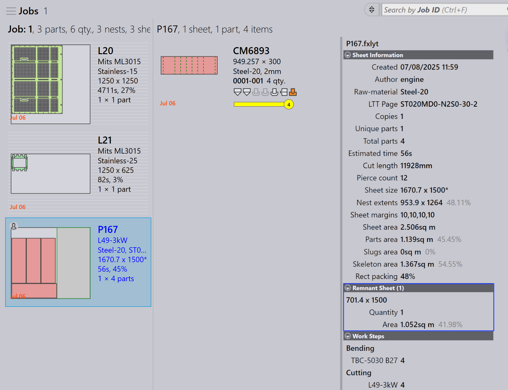
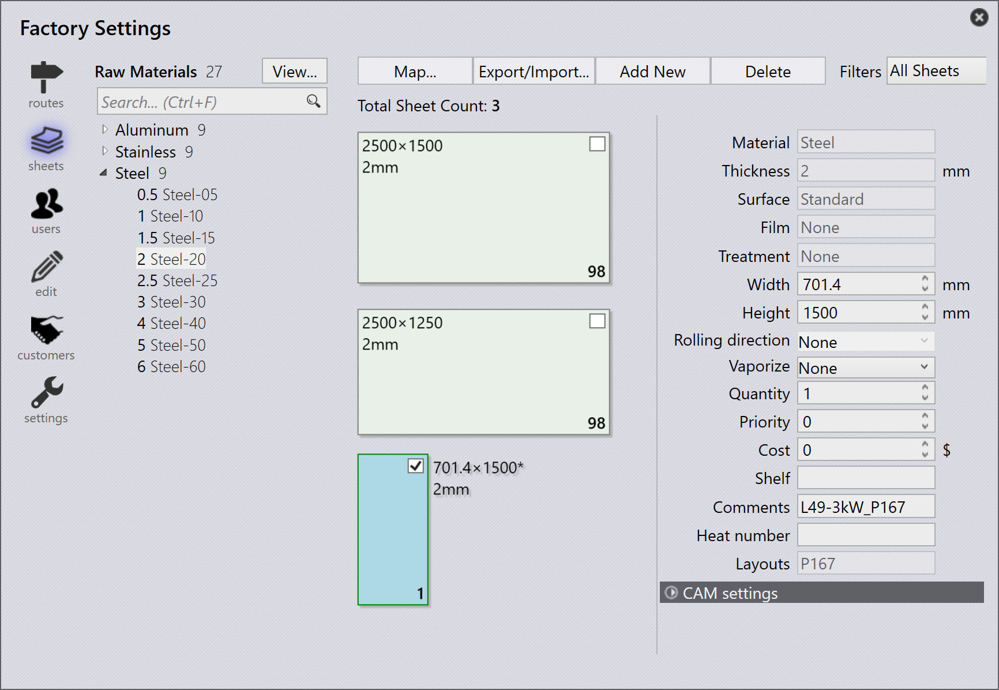

Automatická správa zbytků
Povolení zbytků
TruSmartCAM podporuje automatizované vytváření zbytkových listů z uspořádání během hnízdění. Tato funkce je dostupná pouze se stroji TecZone Laser.
-
Klikněte na závod → Stroje → Výchozí nastavení stroje… → Skeleton cuts.
-
Vyberte možnost Slice Sheet Skeleton & Create Remainder Sheet pro povolení této funkce.
Pokud je tato funkce povolena, zbývající oblast uhnízdněného listu je rozdělena na zbytkové listy na základě přiřazené Minimum Remainder Sheet Value v X & Y.

Konfigurace automatických zbytků
-
Klikněte na závod → nastavení → Úloha.
-
Vyberte Aktualizovat sklad. zásobu plechu u (ne)uvolnění optim. rozmístění a Automatizovat zbytek správa zásob.

Automatické zbytky
Když vyhnízdíte díly, pokud zbývající oblast listu splňuje Minimum Sheet Value X & Y, TruSmartCAM automaticky vytvoří zbytkový list ze zbývajícího prostoru.
-
V zobrazení Job Nest jsou hnízdění, která mají zbytkové listy, zobrazena se zeleným obrysem okraje a šedým pozadím.

-
Dvojitým kliknutím na hnízdění otevřete stránku Nest Detail. Informace o zbytkovém listu jsou zobrazeny s velikostí zbytkového listu, množstvím a oblastí.

-
Klikněte pravým tlačítkem na hnízdění a vyberte Edit pro otevření v TecZone. Hnízdění zobrazuje řezné linky mezi díly a linky skeleton slice společně s vyrytými rozměry zbytku. (Materiál, Tloušťka a Velikost zbytku).
Značka vyrytích rozměrů zbytku pomáhá operátorovi vybrat list bez měření, což usnadňuje jeho použití v budoucích hnízděních.

Když kliknete na Označit kompletní…, zbytkový list je zobrazen se zeleným zaškrtávacím znaménkem, což naznačuje, že hnízdění je dokončeno. Částečně stínovaná čtvercová ikona naznačuje, že zbytkový list je vytvořen a aktualizován v inventáři listů.

Databaze listů je aktualizována s velikostí a množstvím zbytkového listu, který je identifikován symbolem hvězdičky (*) na konci velikosti listu. Zbytkové listy mají zelený okraj.

Automatické plánování nebo interaktivní plánování zakázky považuje zbytkové listy za vysokou prioritu v plánu hnízdění, což zajistí, že jsou použity první, aby byla dílna zbavena nepoužívaných zbytků.